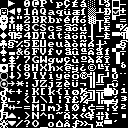
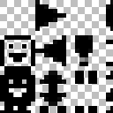
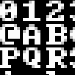

2.1.2. Using a custom bitmap font
setCustomFont
This function allows you to use a bitmap font (png or bmp) with custom character size or layout.
It should be called before initializing the root console with initRoot.
Once this function is called, you can define your own custom mappings using mapping functions
Different font layouts
| ASCII_INROW | ASCII_INCOL | TCOD |
 |  |  |
- ascii, in columns : characters 0 to 15 are in the first column. The space character is at coordinates 2,0.
- ascii, in rows : characters 0 to 15 are in the first row. The space character is at coordinates 0,2.
- tcod : special mapping. Not all ascii values are mapped. The space character is at coordinates 0,0.
Different font types
| standard (non antialiased) | antialiased (32 bits PNG) | antialiased (greyscale) |
|  |  |
- standard : transparency is given by a key color automatically detected by looking at the color of the space character
- 32 bits : transparency is given by the png alpha layer. The font color does not matter but it must be desaturated
- greyscale : transparency is given by the pixel value. You can use white characters on black background or black characters on white background. The background color is automatically detected by looking at the color of the space character
Examples of fonts can be found in libtcod's fonts directory. Check the Readme file there.
static void TCODConsole::setCustomFont(const char *fontFile, int flags=TCOD_FONT_LAYOUT_ASCII_INCOL,int nbCharHoriz=0, int nbCharVertic=0)
void TCOD_console_set_custom_font(const char *fontFile, int flags,int nb_char_horiz, int nb_char_vertic)
console_set_custom_font(fontFile, flags=FONT_LAYOUT_ASCII_INCOL,nb_char_horiz=0, nb_char_vertic=0)
| Parameter | Description |
|---|---|
| fontFile | Name of a .bmp or .png file containing the font. |
| flags | Used to define the characters layout in the bitmap and the font type : TCOD_FONT_LAYOUT_ASCII_INCOL : characters in ASCII order, code 0-15 in the first column TCOD_FONT_LAYOUT_ASCII_INROW : characters in ASCII order, code 0-15 in the first row TCOD_FONT_LAYOUT_TCOD : simplified layout. See examples below. TCOD_FONT_TYPE_GREYSCALE : create an anti-aliased font from a greyscale bitmap For python, remove TCOD _ : libtcod.FONT_LAYOUT_ASCII_INCOL |
| nbCharHoriz,nbCharVertic | Number of characters in the font. Should be 16x16 for ASCII layouts, 32x8 for TCOD layout. But you can use any other layout. If set to 0, there are deduced from the font layout flag. |
Example:
TCODConsole::setCustomFont("standard_8x8_ascii_in_col_font.bmp",TCOD_FONT_LAYOUT_ASCII_INCOL);
TCODConsole::setCustomFont("32bits_8x8_ascii_in_row_font.png",TCOD_FONT_LAYOUT_ASCII_INROW);
TCODConsole::setCustomFont("greyscale_8x8_tcod_font.png",TCOD_FONT_LAYOUT_TCOD | TCOD_FONT_TYPE_GREYSCALE);
TCOD_console_set_custom_font("standard_8x8_ascii_in_col_font.bmp",TCOD_FONT_LAYOUT_ASCII_INCOL,16,16);
TCOD_console_set_custom_font("32bits_8x8_ascii_in_row_font.png",TCOD_FONT_LAYOUT_ASCII_INROW,32,8);
TCOD_console_set_custom_font("greyscale_8x8_tcod_font.png",TCOD_FONT_LAYOUT_TCOD | TCOD_FONT_TYPE_GREYSCALE,32,8);
libtcod.console_set_custom_font("standard_8x8_ascii_in_col_font.bmp",libtcod.FONT_LAYOUT_ASCII_INCOL)
libtcod.console_set_custom_font("32bits_8x8_ascii_in_row_font.png",libtcod.FONT_LAYOUT_ASCII_INROW)
libtcod.console_set_custom_font("greyscale_8x8_tcod_font.png",libtcod.FONT_LAYOUT_TCOD | libtcod.FONT_TYPE_GREYSCALE)